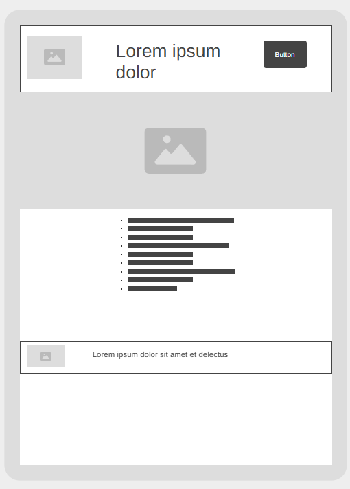
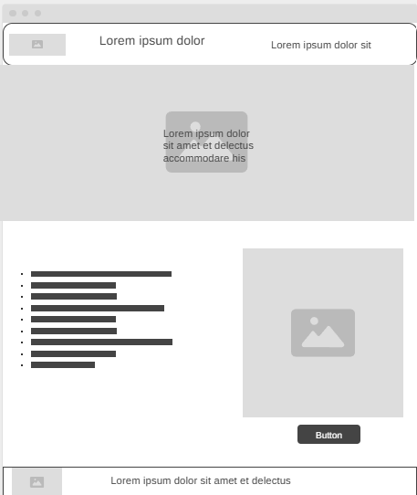

Site Name: Givesome Hands
Site Purpose:
Givesome Hands is a website that connects people with charities, organizations, and fundraising campaigns around the world. The purpose of the website is to make the donation process easier by providing users with access to different causes and helping them find opportunities where they can contribute.
The website organizes donation opportunities by categories such as environment, children, poverty, global humanitarian needs, and women's causes. Users can explore different organizations and choose the cause they feel passionate about supporting.
Target Audience
- People interested in supporting humanitarian causes.
- Individuals who want to donate but do not know where to start.
- Organizations and companies looking for fundraising opportunities.
Scenarios
How can I find a trustworthy organization to donate to?
Givesome Hands provides categories of fundraising organizations, making it easier for users to discover donation opportunities and choose causes they care about.
How can my donation make a difference?
The website explains the importance of donations and how financial support helps organizations provide resources and assistance to people in need.
Color Schema
Palette URL:
https://coolors.co/2c6e49-fefee3-ffc9b9-8c0303| Color 1 | Color 2 | Color 3 | Color 4 |
|---|---|---|---|
| #2C6E49 | #FEFEE3 | #FFC9B9 | #8C0303 |
Typography
Heading Font: Intel One Mono
Paragraph Font: Raleway
Normal Paragraph Example
Givesome Hands helps people connect with organizations that need support. Through donations and fundraising, individuals can contribute to solving problems and helping communities around the world.
Colored Paragraph Example
Charity is an opportunity to show kindness and support people who need help. Every donation can contribute to creating positive change.
Wireframes
Mobile View

Large View
